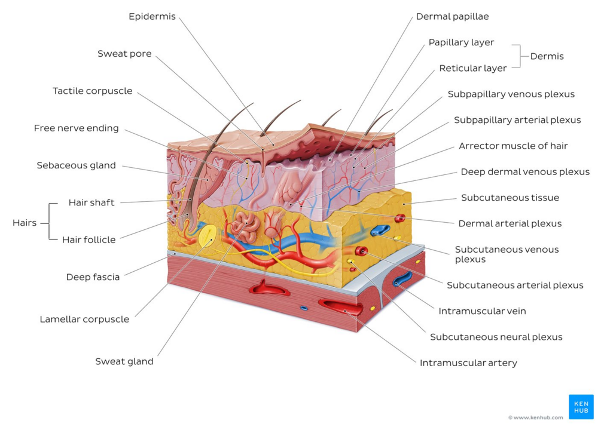

Wound Healing

Overview of the Integumentary System (Skin) [1]
- Skin is the largest organ in the body and covers the body's entire external surface.
- Made up of three layers, the epidermis, dermis, and hypo-dermis.
- Skin's structure is made up of an intricate network that serves as the body’s initial barrier against pathogens, UV light, and chemicals, and mechanical injury, and regulates temperature and the amount of water released into the environment.
- A skin wound results from the breakdown of the epidermal layer integrity [2].
- Wound healing mostly means healing of the skin.
- Begins immediately after an injury to the epidermal layer and might take years.
- Dynamic process including highly organized cellular, humoral, and molecular mechanisms.
- Has 3 overlapping phases which are inflammation, proliferation, and remodelling. Any disruption leads to abnormal wound healing [3].